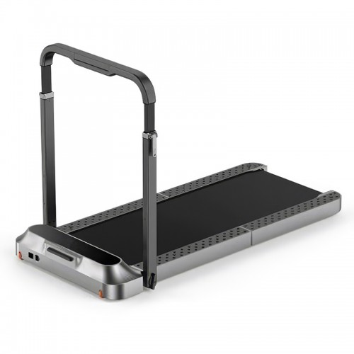
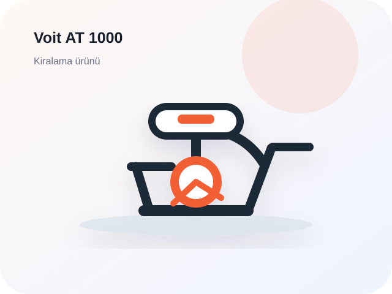

Değerlendirmelerim
Kiraladığın ürünlere bıraktığın değerlendirmeleri görüntüle.

★★★★★
Ürüne Git →
WalkingPad R2 Pro Katlanabilir Koşu Bandı
Ürün sessiz çalışıyor ve evde kullanırken fazla yer kaplamıyor. Teslimat süreci de hızlıydı.

★★★★★
Ürüne Git →
Voit AT 1000 Dikey Kondisyon Bisikleti
Ev tipi kullanım için yeterli. Sele ayarı ve ekran bilgileri kullanım sırasında oldukça pratik.